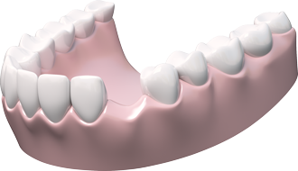

Очевидно, что нельзя выделить какой-то один вид протезирования и назвать его лучшим — ведь существует множество конкретных клинических случаев, а также различных финансовых ситуаций, при которых и врач и пациент должны найти разумный компромисс. В Москве работает великое множество стоматологических клиник.
Что такое имплантат и его функция

Дентальный (зубной) имплантат ― это миниатюрный винт из титана, искусственный корень, который устанавливается в костную ткань челюсти и «нагружается» искусственным зубом. В верхнюю часть имплантата крепится абатмент ― основание для будущей коронки.
Имплантация ― самый надежный, современный и долгосрочный способ восстановления целостности зубного ряда.
Дентальный имплантат поможет:
 при отсутствии нескольких зубов
при отсутствии нескольких зубов
при отсутствии одного зуба
при отсутствии нескольких зубов
при полной адентии (отсутствии зубов на одной или обеих челюстях)
Одно из главных достоинств дентального имплантата ― это естественность и эстетичность результата при полном сохранении жевательной функции челюсти